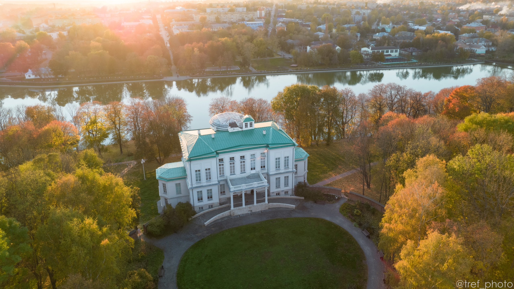
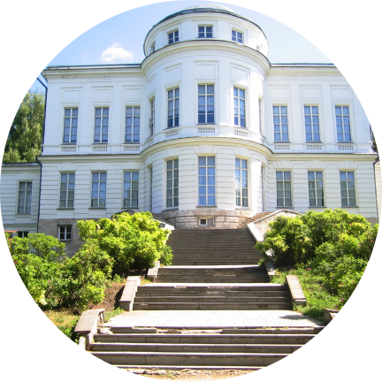
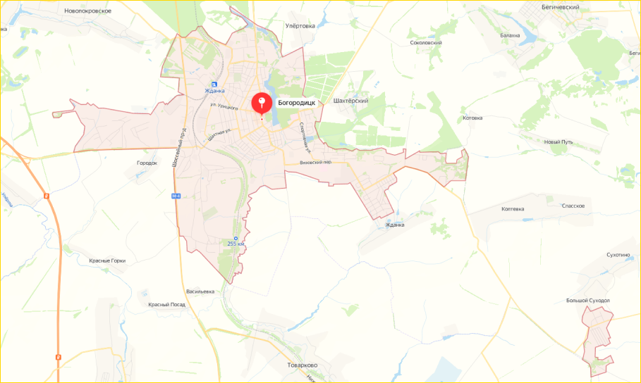

Богоро́дицк — город в России, административный центр Богородицкого района Тульской области. Составляет одноимённое муниципальное образование город Богородицк со статусом городского поселения.
На сайте представлена история Богородицка и Дворцово-паркового ансамбля. Здесь Вы познакомитесь с судьбой рода Бобринских, который пошел от Екатерины-II и графа Орлова; с жизнью А.Т. Болотова, так много сделавшего для города; исследуете исторический сборник очерков, документов.


Богородицк относится к старинным русским городам, чья первоначальная история связана с защитой от врагов южных границ средневекового Московского государства. Неподалёку от того места, где впоследствии появился Богородицк, в 1380 году произошла знаменитая Куликовская битва
Герб муниципального образования город Богородицк Богородицкого района Тульской области Российской Федерации. Утверждён Решением Собрания депутатов муниципального образования город Богородицк Богородицкого района № 7-37 от 27 августа 2009 года
 1.png)
 1.png)

Богородицк Богородицк, Тульская область Координаты: 53.770699, 38.131696